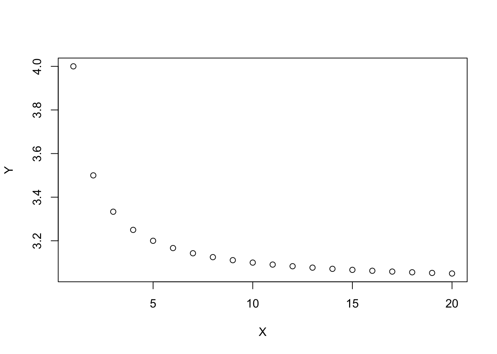
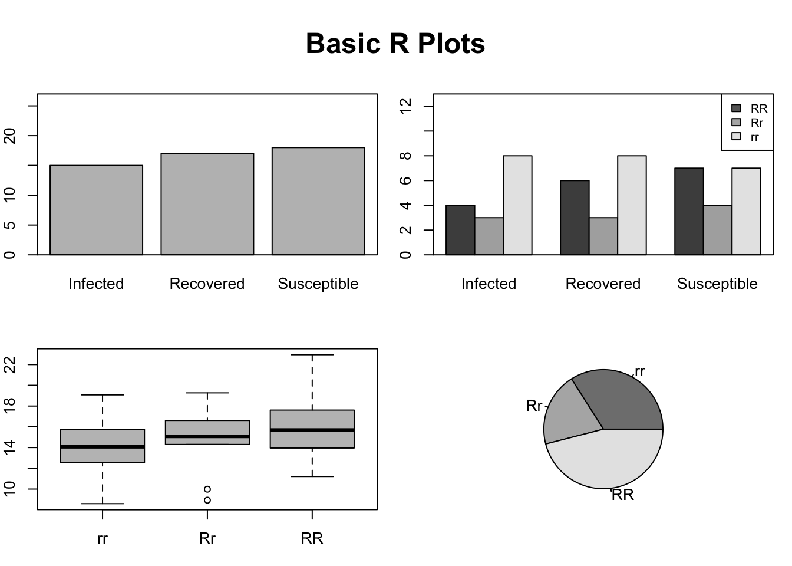

2 Downloading Datafiles via R
All datasets used for this class will be found here - https://github.com/jsimkins2/geog473-673/tree/master/datasets/
In order to download these files easily, you can use the following code:
download.file("https://github.com/jsimkins2/geog473-673/tree/master/datasets/world_shpfiles/world.shp", destfile = "/Users/james/Downloads/world.shp" , mode='wb')
Follow this format for any of the datasets. Here is another example for the TreeData.csv
download.file("https://github.com/jsimkins2/geog473-673/tree/master/datasets/TreeData.csv", destfile = "/Users/james/Downloads/TreeData.csv" , mode='wb')
2.1 Expanding on Basic Plots in R
Variable Assignment & Operations
## [1] 7## [1] 9## [1] 97.5## [1] 1 2 3 4 5 6 7 8 9 10 11 12 13 14 15 16 17 18 19 20## [1] 4.000000 3.500000 3.333333 3.250000 3.200000 3.166667 3.142857 3.125000
## [9] 3.111111 3.100000 3.090909 3.083333 3.076923 3.071429 3.066667 3.062500
## [17] 3.058824 3.055556 3.052632 3.050000
Now let’s add in some extra arguments to the plot function to make it prettier
plot(x=X,y=Y, type = "p", pch=c(24), col = 'yellow', bg='blue', cex = 1.6, xlab = "X", ylab = "Y")
title("X vs Y")
Having trouble remembering the arguments that the function plot() accepts? Same…so just run ?plot for RStudio’s built in helper.
Recap:
- type == type of plot - p stands for points
- pch == plotting ‘character’, i.e., symbol to use
- col == color
- bg == background color (only applicable for pch’s between 21:25)
- cex == size of the points
- xlab == x label
- ylab == y label
2.2 In Class Exercise:
Create a plot above using a sequence of X values where Y is the log of the X values. Use both lines and points, pch of 21, cex of 1.5, and colors of your choosing.
2.3 More Plotting
Let’s take a look at the different kind of points and arguments that go into a plotting function call
plot(1:25, 1:25, xlab="",ylab="",pch=1:25,col=1:25,cex=2)
grid(lty=1, col="gray90")
points(1:25, 1:25, xlab="",ylab="",pch=1:25,col=1:25,cex=2)
title("Plotting symbol, line type, & color codes")
legend("topleft", legend=1:6, lty=1:6, lwd=1.5, ncol=2, bg="gray95")
legend("bottomright", legend=1:8, col=1:8, ncol=3, pch=19, bg="gray95")
2.4 Basic types of plots with dummy data
We’re going to create a fake dataset of those who are infected by the coronavirus. Let’s do so using the sample() function.
# Create a random sample of the 3 types - Susceptible, Infected and Recovered
InfStatus <- factor(sample(c("Susceptible", "Infected", "Recovered"),size = 50, replace = TRUE))
I <- table(InfStatus)
I## InfStatus
## Infected Recovered Susceptible
## 15 19 16# Now let's make a random sample of 3 genotypes (RR, Rr, and rr)
Genotype <- factor(sample(c("RR", "Rr", "rr"), size = 50, replace = TRUE))
G <- table(Genotype)
G## Genotype
## rr Rr RR
## 17 15 18## InfStatus
## Genotype Infected Recovered Susceptible
## rr 4 8 5
## Rr 6 3 6
## RR 5 8 5Note - We turned the sample data info a factor to make sure the factors aren’t double indexed…here is what I mean…
# WITHOUT the factor
test <- sample(c("Susceptible", "Infected", "Recovered"),size = 50, replace = TRUE)
test## [1] "Susceptible" "Infected" "Infected" "Infected" "Infected"
## [6] "Recovered" "Infected" "Susceptible" "Susceptible" "Infected"
## [11] "Recovered" "Susceptible" "Infected" "Recovered" "Recovered"
## [16] "Recovered" "Infected" "Infected" "Susceptible" "Susceptible"
## [21] "Susceptible" "Infected" "Susceptible" "Infected" "Susceptible"
## [26] "Infected" "Infected" "Susceptible" "Infected" "Susceptible"
## [31] "Susceptible" "Susceptible" "Infected" "Infected" "Susceptible"
## [36] "Recovered" "Infected" "Infected" "Recovered" "Susceptible"
## [41] "Susceptible" "Susceptible" "Recovered" "Recovered" "Susceptible"
## [46] "Recovered" "Recovered" "Infected" "Recovered" "Recovered"## [1] "character"# Now as a factor
test2 <- factor(sample(c("Susceptible", "Infected", "Recovered"),size = 50, replace = TRUE))
test2## [1] Susceptible Susceptible Recovered Infected Recovered Susceptible
## [7] Recovered Infected Infected Susceptible Susceptible Infected
## [13] Recovered Recovered Recovered Infected Infected Susceptible
## [19] Recovered Susceptible Recovered Susceptible Susceptible Susceptible
## [25] Infected Susceptible Susceptible Infected Infected Recovered
## [31] Susceptible Recovered Susceptible Infected Susceptible Susceptible
## [37] Susceptible Infected Infected Susceptible Recovered Infected
## [43] Susceptible Recovered Susceptible Infected Recovered Recovered
## [49] Susceptible Recovered
## Levels: Infected Recovered Susceptible## [1] "factor"2.5 Now let’s plot this fake data
par(mfrow=c(2, 2), mar=c(3, 2, 2, 1), oma=c(0, 0, 3, 0), bg = "white") ## create plot array of 2 row x 2 columns
plot(InfStatus, ylim = c(0, 27)) # basic plot with y limit set as a range
box() # just adds a box around the plot above
barplot(table(Genotype, InfStatus), ylim = c(0, 13), beside = TRUE) # barplot
box() # adds a box around the plot above
legend("topright", c("RR", "Rr", "rr"), fill = c("gray40", "gray70", "gray90"), ncol = 1, cex = 0.75) # legend
boxplot(rnorm(50, mean = 15, sd = 3) ~ Genotype, col = "gray75") # boxplot
pie(G, col = c("gray50", "gray70", "gray90")) # pie plot
mtext("Basic R Plots", outer = TRUE, cex = 1.5, font = 2) # main title